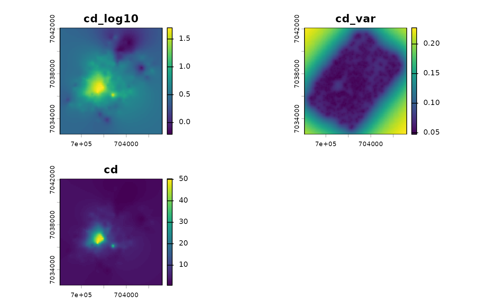

Interpolates a soil concentration measured at sampling points onto a regular raster grid by kriging. Two flavours are available:
**Ordinary kriging (OK)** when `covariates = NULL`: the mean is unknown but constant over the area.
**Kriging with external drift (KED)** when `covariates` is a `SpatRaster`: the mean varies linearly with the covariate layers (e.g. the log-distance to a contamination source, see [source_covariates()]) and the kriging interpolates the residuals.
By default the interpolation is done on `log10(value)`, which is the natural scale for metal concentrations (log-normal distribution).
Usage
krige_soil(
points,
value,
template = NULL,
covariates = NULL,
model = "Exp",
vgm = NULL,
log10 = TRUE,
res = 25,
margin = 1000,
mask = NULL,
cutoff = NULL,
width = NULL,
kappa = 0.5,
clamp = TRUE,
verbose = TRUE
)Arguments
- points
An `sf` object of POINT geometries in a projected CRS (metres).
- value
Character. Name of the concentration column (e.g. `"cd"`).
- template
Optional `SpatRaster` defining the output grid. If `NULL`, a grid is built from the points with [soil_grid()] using `res` and `margin`. If `covariates` is given and `template` is `NULL`, the covariate grid is used.
- covariates
Optional `SpatRaster` of drift covariates (must cover the points and the output grid, same CRS).
- model
Character vector of candidate variogram models (see [fit_soil_variogram()]); the best fitting one is used. Ignored when `vgm` is given.
- vgm
Optional `soil_vgm` object (from [fit_soil_variogram()] or [soil_vgm()]) to use instead of fitting one.
- log10
Logical. Krige `log10(value)` (default `TRUE`).
- res, margin
Resolution and margin (m) of the grid built when `template` and `covariates` are `NULL`.
- mask
Optional `sf` polygon or `SpatVector`; cells outside are set to `NA`.
- cutoff, width
Passed to [soil_variogram()].
- kappa
Matérn smoothness, passed to [fit_soil_variogram()].
- clamp
Logical. Restrict the covariate values of the grid cells to the range observed at the sampling points (default `TRUE`). This prevents the linear drift from being extrapolated outside the conditions actually sampled (e.g. right next to a source where no sample was taken).
- verbose
Logical. Print messages?
Value
A `SpatRaster` with three layers:
- `<value>_log10`
the kriging prediction on the log10 scale (named `<value>` if `log10 = FALSE`);
- `<value>_var`
the kriging variance (same scale as the prediction);
- `<value>`
(only if `log10 = TRUE`) the back-transformed concentration `10^prediction`, i.e. the median concentration.
The fitted variogram is returned as the attribute `"vgm"` when available.
References
Pebesma, E. J. (2004). Multivariable geostatistics in S: the gstat package. Computers & Geosciences, 30(7), 683-691.
Hengl, T., Heuvelink, G. B. M., & Rossiter, D. G. (2007). About regression-kriging: From equations to case studies. Computers & Geosciences, 33(10), 1301-1315.
See also
[soil_variogram()], [fit_soil_variogram()], [cv_soil()], [source_covariates()], [kernel_smooth_soil()]
Examples
# \donttest{
data(soil_metaleurop)
# Ordinary kriging of log10(Cd) at 100 m
r <- krige_soil(soil_metaleurop, "cd", res = 100, margin = 500)
#> 8 duplicated location(s) averaged.
#> Variogram model: Exp
#> nugget = 0.03899 | partial sill = 0.1726 | range = 2114 m
#> weighted SSE = 3.158e-05
#> fitted on values (constant mean)
terra::plot(r)

# }